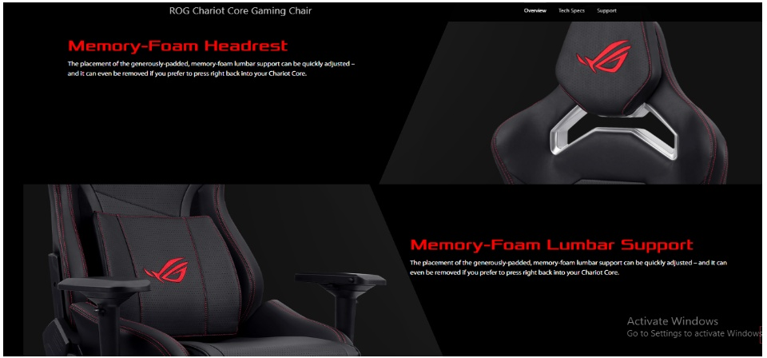

|
ROG Chariot Core gaming chair in racingcar style, featuring memory-foam lumbar support, 4D armrests, tilt mechanism and durable class 4 gas lift. Ergonomic design with memory-foam head and lumbar cushion for ultimate comfort 4D-adjustable armrest and up to 145°-recline backrest, plus articulated tilt mechanism to increase gaming immersion Convenient rear hook infused with ROG’s gaming style and spirit Constructed from tactile leatherette and high-density, cold-cure foam for superb durability Superior safety provided by all-steel frame, class 4 gas lift, durable PU casters and aluminum-alloy, five-star base.
|
NEW ROG Chariot Core gaming chairProduct Code: IRCH5210 
R 19 000 Availability: 5 In Stock Condition: New |
Crafted for Comfort Created for Pros.
ROG Chariot Core Gaming Chair evokes the style and sensation of taking the driving seat of high-end racing car. With memoryfoam head and lumbar support, breathable PU leather, 4D-adjustable armrests, lockable tilt mechanism and highly-durable components, Chariot Core cossets you in safe, comfortable style – and empowers you to project your own personality in any gaming arena

Crafted for Comfort
ROG Chariot Core delivers ergonomic comfort from top to bottom. With the memory-foam ad headrest and removable lumbar support, it aims to provide the best comfort.
Memory-Foam Headrest
The placement of the generouslypadded, memory-foam lumbar support can be quickly adjusted – and it can even be removed if you prefer to press right back into your Chariot Core
4D Adjustable Armrests
With effortless control you can infinitely adjust the height, depth, horizontal position and angle of either armrest, so it's easy to set the perfect support for you.
Tilt, Rock or Lock
Unhitch the lock and Chariot Core will tilt and rock in tune with your body, keeping you comfortably cradled as your immersion increases.
Raise, Drop or Recline
It takes just a moment to alter your sitting position from upright to 145° reclined and vice vers you can go from relaxed to alert in the blink of an eye. You can also lift or drop the height to match your frame – so find your perfect p and lock it in!


| Dimensions | Weight |
|---|---|
| Seat base: 600x580 mm(W x L ) Chair Base: 730mm (W) Hight: 1260mm-1350mm | 25.5KG |
{kind=link}
{kind=link}
{kind=link}